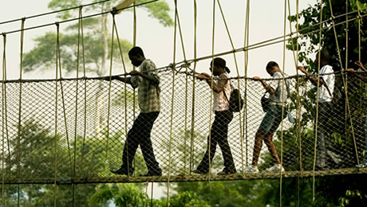

Adventuruous walk

This is ideal for people who are very adventuruous. Rambling Club brings people together for a healthy walk whiles spending time with friends and family. This is organized every holiday. Due to covid-19 we currently have no upcoming canopyy walk. We are hoping to return in October 2020.